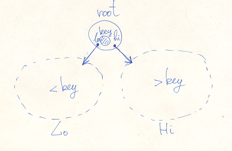
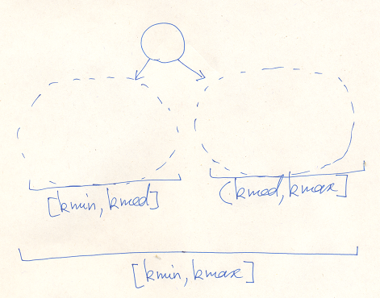

Files CCore/inc/Tree.h CCore/src/Tree.cpp
Subfolders CCore/inc/tree CCore/src/tree
Binary trees is an important class of data structures. Tree consists of the set of elements, each element has a unique key. Keys are comparable and form a linear ordered set. Tree has a root element and two subtrees: Lo and Hi. Elements in the Lo subtree have a lower keys than the root element. The same way, elements in the Hi subtree have a higher keys than the root element.
Operations complexities are O(tree height). To be efficient, tree must have a limited height. To achive this there are different methods. We use two most important of them: Radix Tree and Red-Black Tree. The first is applicable to the key types with the limited value range, like integral types.
The height of the Radix Tree is limited by the log(value range volume).
Red-Black Tree has a colored arrows. Each arrow is either red or black. Some properties must be statisfied: there is no two consecutive red arrows, all tree leaves have the same black height. The height of the Red-Black Tree is limited by the 2*log(number of elements). So for these trees operations has a practically constant time limit.
Trees are useful for building maps.
CCore provides a variety of intrusive trees, the same way as a lists. They are available through the header CCore/inc/Tree.h.
CCore has four kind of tree links, each with a tree algorithms sets. To build a tree element you must include one of this links in the class:
struct Node
{
TreeLink<Node,int> link;
....
};
Then use one of Algorithms Packages to operate on trees:
typedef TreeLink<Node,int>::RadixAlgo<&Node::link> Algo;
The TreeLink is a simplest tree link. It has three members: pointers to the Lo and Hi subtrees and the key. The key is unique across all tree.
template <class T,class K>
struct TreeLink
{
T *lo;
T *hi;
K key; // unique
typedef TreeLink<T,K> Node;
template <TreeLink<T,K> T::* LinkMember,class KRef=K> struct BinAlgo;
template <TreeLink<T,K> T::* LinkMember> struct RadixAlgo;
};
There are two Algorithm Packages: BinAlgo with basic binary tree operations and RadixTree, which extends BinAlgo with radix tree operations. The first package has the additional template parameter: KRef. If K is a lightweight type, then use the default KRef equals K. But for more compicated types, you may use const K & instead or even a completely different type. This type is used to pass key arguments. RadixTree requires the K to be an unsigned integral type.
struct BinAlgo
{
// node!=0
// root_ptr!=0
static Node & Link(T *node) { return node->*LinkMember; }
Link() extracts links from the object.
// Find static T * Find(T *root,KRef key); // == key static T * FindMin(T *root); static T * FindMin(T *root,KRef key); // min >= key static T * FindMax(T *root); static T * FindMax(T *root,KRef key); // max <= key
Find...() is a family of searching functions. The first argument is a tree root pointer. It may also be a subtree root. The second argument (if any) is a key value. The keys must be 3-Way comparable using the function Cmp(KRef,K). Each function returns a pointer to the found element, or null if the required element does not exist.
Find() is searaching for the element with the given key.
FindMin() is searaching for the element with the minimum key in the tree.
FindMin(,key) is searaching for the element with the minimum key in the tree, greater or equal the given key.
FindMax() is searaching for the element with the maximum key in the tree.
FindMax(,key) is searaching for the element with the maximum key in the tree, less or equal the given key.
// Locate static T ** Locate(T **root_ptr,KRef key); static T ** LocateMin(T **root_ptr); static T ** LocateMin(T **root_ptr,KRef key); // min >= key static T ** LocateMax(T **root_ptr); static T ** LocateMax(T **root_ptr,KRef key); // max <= key
Locate...() is another family of searching functions. It does the same as the correspondent Find...() function, but gets another input. It takes not the root pointer, but a non-null pointer to the root pointer variable. The return value is another double pointer: it is the original root_ptr or the pointer to the element pointer in the parent element. It is null, if the element is not found.
These functions are required by the Del...() implementations, you probably wouldn't use them.
// Del static T * DelRoot(T **root_ptr); // (*root_ptr)!=0 static T * Del(T **root_ptr,KRef key); static T * DelMin(T **root_ptr); static T * DelMin(T **root_ptr,KRef key); static T * DelMax(T **root_ptr); static T * DelMax(T **root_ptr,KRef key); static void Del(T **root_ptr,T *node);
Del...() deletes the element from the tree and returns the pointer to this element (or null, if the element is not found). The first argument is a (non-null) root double pointer, this variable will be updated as the root is changed during the operation.
DelRoot() deletes the root element. The element must exist.
Del(root_ptr,node) deletes the given element form the tree. node must not be null.
The remaining Del...() functions search the element like the Find...() do and delete it.
// struct NodePtr
struct NodePtr
{
T **node_ptr;
NodePtr(T **node_ptr_) : node_ptr(node_ptr_) {}
T ** operator + () const { return node_ptr; }
bool operator ! () const { return !node_ptr; }
T * node() const { return *node_ptr; }
};
NodePtr wraps a double pointer to an element. It is used by Root methods to return locate...() results.
// struct Root
struct Root
{
T *root;
// constructors
Root() { init(); }
// methods
void init() { root=0; }
T * operator + () const { return root; }
bool operator ! () const { return !root; }
// find
T * find(KRef key) const { return Find(root,key); }
T * findMin() const { return FindMin(root); }
T * findMin(KRef key) const { return FindMin(root,key); }
T * findMax() const { return FindMax(root); }
T * findMax(KRef key) const { return FindMax(root,key); }
// locate
NodePtr locate(KRef key) { return Locate(&root,key); }
NodePtr locateMin() { return LocateMin(&root); }
NodePtr locateMin(KRef key) { return LocateMin(&root,key); }
NodePtr locateMax() { return LocateMax(&root); }
NodePtr locateMax(KRef key) { return LocateMax(&root,key); }
// del
T * del(KRef key) { return Del(&root,key); }
T * delMin() { return DelMin(&root); }
T * delMin(KRef key) { return DelMin(&root,key); }
T * delMax() { return DelMax(&root); }
T * delMax(KRef key) { return DelMax(&root,key); }
void del(T *node) { Del(&root,node); }
};
};
Root incapsulates a root pointer and tree operations. The methods are direct calls of the correspondent functions.
struct RadixAlgo : BinAlgo
{
// Med()
static K Med(K kmin,K kmax) // kmin<kmax
{
return K( kmin+(kmax-kmin-1)/2 );
}
// class PrepareIns
class PrepareIns : NoCopy
{
....
public:
T *found;
PrepareIns(T **root_ptr,K key);
PrepareIns(typename BinAlgo<LinkMember,K>::Root &root,K key);
PrepareIns(T **root_ptr,K key,K kmin,K kmax);
PrepareIns(typename BinAlgo<LinkMember,K>::Root &root,K key,K kmin,K kmax);
void complete(T *node) { (this->*complete_func)(node); }
};
// struct Check
struct Check
{
K minval;
K maxval;
Check(T *root,K kmin,K kmax);
....
};
};
RadixAlgo extends BinAlgo with Radix Tree functionality. The K must be an unsigned integral type. Each Radix Tree has a value range. It may be the full value range of the given type K, or some shorter range. Anyway, you have to use the same range for all operations with a particular tree.
Med() is used to split a value range. If the tree value range is [kmin,kmax}, and Med(kmin,kmax) -> kmed, then the Lo subtree has a value range [kmin,kmed] and the Hi subtree — [kmed+1,kmax].
PrepareIns is a tool to insert an element into the tree. Its constructor prepares the operation. Its arguments are: the root double pointer (or the reference to a Root object), the key, and, optionally, the value range. If the value range is ommited, then the full range is assumed. There are two cases. First, there exist an element with the given key already. In such case, the pointer to this element is returned in the member found. Otherwise, found is null and you may do insert using the method complete(). You must provide an element to be inserted. The key will be placed into the link of this element. If you do not complete the operation, the tree remains in the original logical state, but probably with some tree structure modifications.
Check performs the tree structure check. This type is for testing purpose mostly. Constructor takes the root pointer and the value range. If the tree is broken, an exception is thrown. Otherwise, minval and maxval members will be assigned with the minimum and maximum value of keys in the tree (or both 0 if the tree is empty).
The TreeUpLink is another tree link. It has the additional member up. It points to the parent element. For the root node it is null. The keys are not unique. In fact, this kind of tree is a combination of tree and list. There are two kind of links: normal tree links, and same-key links, where lo==this.
template <class T,class K>
struct TreeUpLink
{
T *lo; // == this for same-key nodes
T *hi;
T *up;
K key; // non-unique
typedef TreeUpLink<T,K> Node;
template <TreeUpLink<T,K> T::* LinkMember,class KRef=K> struct BinAlgo;
template <TreeUpLink<T,K> T::* LinkMember> struct RadixAlgo;
};
BinAlgo is essentially the same as for the TreeLink.
struct BinAlgo
{
// node!=0
// root_ptr!=0
static Node & Link(T *node) { return node->*LinkMember; }
// Find
static T * Find(T *root,KRef key); // == key
static T * FindMin(T *root);
static T * FindMin(T *root,KRef key); // min >= key
static T * FindMax(T *root);
static T * FindMax(T *root,KRef key); // max <= key
The family of Find...() functions are the same.
// Del static T * DelRoot(T *root); // root!=0 static void Del(T **root_ptr,T *node); static T * Del(T **root_ptr,KRef key); static T * DelMin(T **root_ptr); static T * DelMin(T **root_ptr,KRef key); static T * DelMax(T **root_ptr); static T * DelMax(T **root_ptr,KRef key);
Again, the family of Del...() functions are the same.
// struct Root
struct Root
{
T *root;
// constructors
Root() { init(); }
// methods
void init() { root=0; }
T * operator + () const { return root; }
bool operator ! () const { return !root; }
// find
T * find(KRef key) const { return Find(root,key); }
T * findMin() const { return FindMin(root); }
T * findMin(KRef key) const { return FindMin(root,key); }
T * findMax() const { return FindMax(root); }
T * findMax(KRef key) const { return FindMax(root,key); }
// del
T * del(KRef key) { return Del(&root,key); }
T * delMin() { return DelMin(&root); }
T * delMin(KRef key) { return DelMin(&root,key); }
T * delMax() { return DelMax(&root); }
T * delMax(KRef key) { return DelMax(&root,key); }
void del(T *node) { Del(&root,node); }
};
};
The Root is the same too, except, there is no locate() family of methods.
struct RadixAlgo : BinAlgo
{
// Med()
static K Med(K kmin,K kmax) // kmin<kmax
{
return kmin+(kmax-kmin-1)/2;
}
// Ins
static void Ins(BinAlgo::Root &root,T *node,K kmin,K kmax);
static void Ins(T **root_ptr,T *node,K kmin,K kmax);
static void Ins(BinAlgo::Root &root,T *node);
static void Ins(T **root_ptr,T *node);
// struct Root
struct Root : BinAlgo::Root
{
void ins(T *node,K kmin,K kmax);
void ins(T *node,K key,K kmin,K kmax);
void ins(T *node);
void ins(T *node,K key);
};
// struct Check
struct Check
{
K minval;
K maxval;
Check(T *root,K kmin,K kmax);
....
};
};
RadixAlgo extends the BaseAlgo.
Med() is the same.
Check is the same.
The main difference is insertion algorithms. They are simpler and implemented by the functions. That is because keys are not unique and you may always insert an element into the tree. There are four of them. The first argument is the double root pointer or the BaseAlgo::Root reference. The second argument is the element to be inserted. The element must have the key inside initialized. Two last arguments, if any, specifies the tree value range.
The RadixAlgo Root extends the BaseAlgo Root with the insertion methods. Two of them are direct calls of the correspondent Ins() functions. Another two have the additional argument key. This key is placed into the element link before insertion.
RBTreeLink is a Red-Black Tree link. It has the additional member: RBFlag flag. This flag determines the arrows colores:
enum RBFlag { RBFlag_BlackBlack, RBFlag_HiRed, RBFlag_LoRed, RBFlag_RedRed }; template <class T,class K> struct RBTreeLink { T *lo; T *hi; K key; // unique RBFlag flag; typedef RBTreeLink<T,K> Node; template <RBTreeLink<T,K> T::* LinkMember,class KRef=K> struct BaseAlgo; template <RBTreeLink<T,K> T::* LinkMember,class KRef=K> struct Algo; template <RBTreeLink<T,K> T::* LinkMember,class KRef=K> struct AltAlgo; };
There are tree Algorithms Packages for this link: BaseAlgo, Algo and AltAlgo. AltAlgo is an alternative implementation of the same operations, as Algo.
struct BaseAlgo
{
// node!=0
static Node & Link(T *node) { return node->*LinkMember; }
// Find
static T * Find(T *root,KRef key); // == key
static T * FindMin(T *root);
static T * FindMin(T *root,KRef key); // min >= key
static T * FindMax(T *root);
static T * FindMax(T *root,KRef key); // max <= key
// struct Check
struct Check
{
K minval;
K maxval;
int height;
bool black_black;
explicit Check(T *root);
....
};
};
This package contains find operations and the Check. Find operations are exactly the same as find operations of the TreeLink. Check has the same meaning too. It just has different agruments: there are no range variables. And it returns additional information: height is a black height of the tree, black_black is true, if two root arrows of the tree are black.
struct Algo : BaseAlgo
{
// node!=0
// root_ptr!=0
// Del
static T * DelMin(T **root_ptr);
static T * DelMax(T **root_ptr);
static T * Del(T **root_ptr,KRef key);
static void Del(T **root_ptr,T *node);
Algo extends BaseAlgo with delete operations, insert operation and Root.
There are four delete functions with the same semantic as TreeLink delete functions.
// struct Root
struct Root
{
T *root;
// constructors
Root() { init(); }
// methods
void init() { root=0; }
T * operator + () const { return root; }
bool operator ! () const { return !root; }
// find
T * find(KRef key) const { return Find(root,key); }
T * findMin() const { return FindMin(root); }
T * findMin(KRef key) const { return FindMin(root,key); }
T * findMax() const { return FindMax(root); }
T * findMax(KRef key) const { return FindMax(root,key); }
// del
T * delMin() { return DelMin(&root); }
T * delMax() { return DelMax(&root); }
T * del(KRef key) { return Del(&root,key); }
void del(T *node) { Del(&root,node); }
};
Root incapsulates a root pointer and tree operations. The methods are direct calls of the correspondent functions.
// class PrepareIns
class PrepareIns : NoCopy
{
....
public:
T *found;
PrepareIns(T **root_ptr,KRef key);
PrepareIns(Root &root,KRef key);
void complete(T *node);
};
};
PrepareIns is a tool to insert an element into the tree. Its constructor prepares the operation. Its arguments are: the root double pointer (or the reference to a Root object) and the key. There are two cases. First, there exist an element with the given key already. In such case, the pointer to this element is returned in the member found. Otherwise, found is null and you may do insert using the method complete(). You must provide an element to be inserted. The key will be placed into the link of this element. If you do not complete the operation, the tree remains in the original logical state, but probably with some tree structure modifications.
RBTreeLink is another Red-Black Tree link. It contains the additional up pointer, this pointer points to the parent tree element. For the root element it is null.
template <class T,class K>
struct RBTreeUpLink
{
T *up;
T *lo;
T *hi;
K key; // unique
RBFlag flag;
typedef RBTreeUpLink<T,K> Node;
template <RBTreeUpLink<T,K> T::* LinkMember,class KRef=K> struct BaseAlgo;
template <RBTreeUpLink<T,K> T::* LinkMember,class KRef=K> struct Algo;
};
There are two Algorithms Packages for this link: BaseAlgo and Algo. They content are the same as for the RBTreeLink packages.